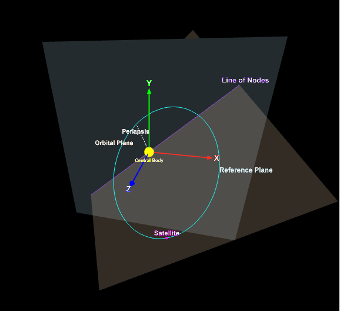
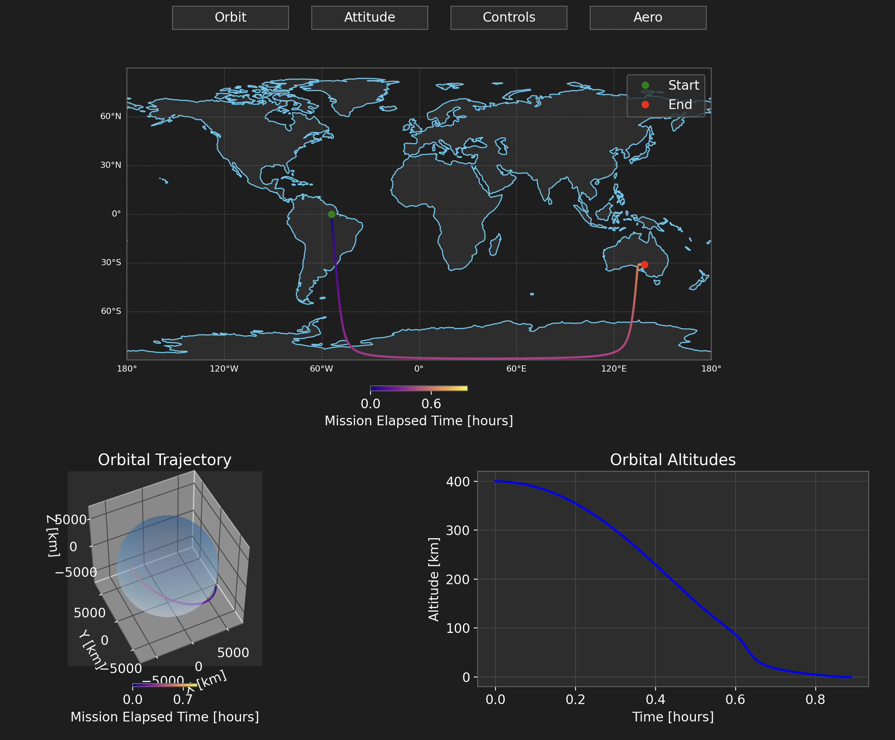

Autonomous Space Ops - Astrodynamics - Machine Learning
Daniel Huterer Prats
PhD student in Aerospace Engineering at CU Boulder AVS Lab, building autonomous scheduling and inspection systems for spacecraft operations under real mission constraints.
My work combines reinforcement learning, orbital mechanics, and safety-aware planning to support scalable on-orbit decision-making for surveillance, servicing, and exploration missions.
Work
Key research and industry roles. Organization names link to their official pages.
-

Autonomous Vehicle Systems Lab Graduate Researcher - Boulder, CO
Developing Basilisk-based RL frameworks for autonomous RSO imaging under power, field-of-view, and pointing constraints.
-

Laboratory for Atmospheric and Space Physics GNC Engineer - Boulder, CO
Ran Monte Carlo campaign analyses for the Emirates Mission to the Asteroid Belt and supported trajectory and gravity-assist assessments.
-

Infinite Orbits Main Systems Engineer - Toulouse, France
Led system development for GEO servicing concepts, including safety architecture and FDIR for docking and life-extension scenarios.
-

ALTEN Aerospace Consultant - Toulouse, France
Managed ESSP fast-monitoring operations for signal processing and GNSS service performance across the European region.
-

UPC Space Systems Project Lead - Barcelona, Spain
Led end-to-end design of a wildfire-tracking mission concept, with emphasis on payload and AOCS architecture.
-

NYU Abu Dhabi Rocketry Team Chief Engineer / Researcher - Abu Dhabi, UAE
Built high-power rocketry and conducted research in astrophysics and exoplanet-atmosphere modeling during undergraduate studies.
-

NYUAD Galaxy Formation Group Undergraduate Researcher - Abu Dhabi, UAE
Co-developed efficient mapping techniques to accelerate baryonic simulation insight from dark-matter-only runs.
Projects
Non-redundant project highlights that complement, rather than duplicate, the Research and Publications pages.

Orbital Elements Visualizer
Interactive geometry tool for inclination, RAAN, argument of perigee, and anomaly intuition in orbit design.

Attitude Dynamics Explorer
Hands-on controls for spacecraft rotational behavior, orientation propagation, and dynamics interpretation.

Multi-Gravity Assist Optimization
Genetic-algorithm framework for complex interplanetary transfers balancing arrival time and total delta-v.

Moon and Mars Water Purification
Comparative analysis of extraction and purification strategies for in-situ resource utilization under lunar and Martian constraints.